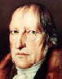

Philosophy Pages
| Dictionary | Study Guide | Logic | F A Q s | ||
|---|---|---|---|---|---|---|
| History | Timeline | Philosophers | Locke | |||
| Philosophy Pages
| Dictionary | Study Guide | Logic | F A Q s | ||
|---|---|---|---|---|---|---|
| History | Timeline | Philosophers | Locke | |||
The initial step in this transformation was taken by Johann Gottlieb Fichte, author of the Wissenschaftslehre (Science of Knowledge) (1797). Noticing that the Kantian account of experience creates a vital tension between the roles of pure intelligence and pure object as noumenal realities, Fichte argued that the balance between the two cannot be maintained. We are, instead, driven to choose one of two alternative views: to emphasize the knower and ignore the known as a thing in itself, or to ignore the knower in order to focus on the reality of the known. Fichte chose the former, idealistic course, believing it alone capable of securing the freedom required for an adequate account of morality.
According to Fichte, then, all philosophy and all reality begins with the transcendental ego, the elusive but purely active noumenal self, identifiable only in an indefinitely repeated reflection upon primary experience ("think on one who thinks on one who . . ."). This conscious being expand itself infinitely to comprehend everything, limited in its scope only by the logical categories and the regulative principles they entail. Hence, for Fichte, objects exist only as the objects of consciousness, believed by some individual ego in its restlessly active pursuit of knowledge.
Since an individual ego of this sort just is the active self as moral agent, Fichte supposed that morality follows directly from its nature. Once again, the ego expands infinitely to do everything, yet is consistently limited by its own legislation of the moral law. Since all egos are subject to precisely the same conditions, universal agreement to their moral precepts is assured. At the social level, this implies individual membership in a society of like-minded selves, a primitively socialist spirit akin to that exhibited in the French Revolution, of which Fichte was a vocal supporter.
By eliminating all references to material objects as even potential things in themselves, Fichte left room for nothing but minds in the noumenal realm.
Thus, although he regarded himself as a loyal follower of Kant, Fichte significantly modified the master's thought by regarding it as inescapably committed to transcendental idealism.
Another significant step in the transformation of idealism may be clearly seen in the writings of Friedrich Wilhelm Joseph von Schelling. More willing than Fichte to preserve the tension between knower and known, subject and object, ego and non-ego, Schelling attempted an adequate description of their intimate interdependence with each other. But the nature of the connection between the two remained obscure and problematic.
Schelling certainly rejected any objectification of the material independently of the knowing self, thus avoiding the dangers of dogmatism, yet he thought it evident from the content of our experience that representation embodies genuine information about the world. Kant's accounts of causality and teleology are not enough to explain the connection between the object and our knowing of it, and Fichte's explanation in wholly mental terms granted too little reality to the realm of the natural object.
What we must acknowledge, Schelling believed, is that there is a perfect parallel between the world of nature and the structure of our awareness of it—"Nature reflects Consciousness." Of course this cannot be true of my individual ego, though, since the world does not invariably conform to my own thought about it. But the apparent subjectivity of this approach is easily overcome by postulating an absolute consciousness, which simultaneously contains the thought of every individual ego and provides the noumenal ground for every material object in nature.
Like the neoplatonic center of emanations or Spinoza's "god or nature," the Absolute is completely self-contained in essence and exclusively self-caused in operation. The study of physics, as an exploration of the necessary operation of the Absolute considered in one way, then, will be perfectly parallel to the science of knowledge that examines the necessary structure of self-conscious awareness that is the Absolute considered in another way.
By shifting from the thoughts of an individual ego to the infinite reason of the Absolute, employing the notions of earlier monists
to express the fundamental identity of the real with the rational, Schelling transformed German idealism.
This vision of the world was greatly influential on the Romantic poets, but its ripest philosophical fruit is to be found in the philosophy of Hegel.
|

Hegel Life and Works . . Dialectic . . Subjective . . Objective . . Absolute Bibliography Internet Sources |
The greatest of all the German idealists was Georg Wilhelm Friedrich Hegel, who methodically constructed a comprehensive system of thought about the world. Focussed like Kant on the goal of showing how some fundamental unity underlies the confusing multiplicity of experiental contents, Hegel took a much more sytematic approach by making absolute consciousness the key source of ultimate connections among all other things. Above all else, Hegel held that reality must be rational, so that its ultimate structure is revealed in the structure of our thought. Everything that is thinkable, especially apparent contradictions, must be resolvable under some common concept of the reason. In what follows, we will examine in detail the logical apparatus Hegel employed in pursuit of knowledge.
Even more than Aristotle and the Stoics, Hegel believed that the study of logic is an investigation into the fundamental structure of reality itself. According to Hegel, all logic (and, hence, all of reality) is dialectical in character. As Kant had noted in the Antinomies, serious thought about one general description of the world commonly leads us into a contemplation of its opposite. But Hegel did not suppose this to be the end of the matter; he made the further supposition that the two concepts so held in opposition can always be united by a shift to some higher level of thought. Thus, the human mind invariably moves from thesis to antithesis to synthesis, employing each synthesis as the thesis for a new opposition to be transcended by yet a higher level, continuing in a perpetual waltz of intellectual achievement.
Being, for example, is a basic concept that serves as a clear starting-point for any serious thinker, but serious contemplation of its nature reveals it to be so utterly devoid of specific content that the mind is naturally led to the thought of Nothing as its opposite; but these two are not really contradictory, since both may be unified under the more sophisticated and comprehensive notion of Becoming. If, on the other hand, our thesis is the concept of Being as a naive immediate presentation of experience, then its natural antithesis is the idea of Essence as knowledge mediated by classification; and the synthesis that unites these concepts is that of the Notion as a self-mediating interpretation of thought and reality combined.
On the grandest scale of conceivability, all of thought (including the dialectical logic itself) is comprised by the thesis Idea,
whose natural antithesis is Nature, the otherness of the known considered independently of its relation to the knower;
and the grand synthesis of the two is Spirit, the self-knowing, self-actualizing totality of all that is—namely,
the Absolute itself.
This embodies Hegel's fundamental convicions that reality is wholly rational and that whatever is rational must be real.
Human thought is merely one portion of the Becoming of Absolute Spirit, which is (through us) thinking and creating itself as it goes.
Even this development, as Hegel described it in the Phenomenology of Spirit, is best understood as
the triadic transition from subjective to objective to absolute Spirit.
Considered as subjective, Spirit may be observed, through truths about human nature described by the discipline of psychology, in the structure of thought exhibited by each individual human being. In every concrete instantiation, consciousness strives to reach perfect knowledge, and the path of its struggle can, of course, be described as the movement from thesis through antithesis to synthesis:
The first level of consciousness is that of sensory awareness of objects. Despite the fact that sensory images invariably appear to us as concrete particulars, wholly unrelated to each other, we naturally universalize the apparent regularities of their appearance, imposing upon them the forms of space and time and the generalized laws of nature.
Recognition of the role we ourselves play in the origination of these Kantian regulative principles, Hegel supposed, leads us directly to the antithesis of sensory experience, the self-conscious awareness of the individual thinker, who acknowledges self as individual ego. Although this ultimately implies the existence of other selves as well, its immediate consequence is a tendency toward skepticism about the world of objects.
But Hegel held that these levels are transcended by their synthesis in universal consciousness, an abstract awareness of one's own place within the greater scheme of absolute spirit.
The objects of my experience and my awareness of myself are unified by the recognition that each is wholly contained in the fundamental reality of a common whole.
Here the faculty of reason is crucial, since it most clearly draws upon what is common to us all.
Considered objectively, Spirit involves the interaction among many selves that are the proper subject of ethics and social or political theory. Once again, of course, Hegel maintained that a correct understanding of these fields is to be derived not by generalizing from what we observe, but rather by tracing the dialectic through new triads.
Ethics, on Hegel's view, begins with the concept of freedom understood as the right of each individual human being to act independently in pursuit of its own self-interest. The antithesis to this is the emergence of moral rules, which require the imposition of duty as a constraint upon the natural liberty of human desire. The synthesis of the two for Hegel is "the ethical life," which emerges from a sincere recognition of the significance of one's own stake in the greater good of the whole.
Political order has its origins in family life, in which the basic needs of all individuals are served by mutual feeling, without any formal principle of organization. The antithesis to this is civil life, in which the incorporation of so many more individual units often leads to a system of purely formal regulation of conduct, demanded by law without any emotional bond. The synthesis of the two, then, is the State, which Hegel believed to unite society into a sort of civil family, organized in legal fashion but bound together by a profound emotional sense of devotion.
According to Hegel, then, the modern nation must serve as an actualization of the self-conscioius ethical will of a people {Ger. Völk}.
Although this sounds something like Rousseau's general will, Hegel's version puts all of the emphasis on the collective expression of what is best for the people rather than on each individual's capacity to discover it for herself or himself.
This view of the state fits well with the rise of modern nationalism in Europe during the nineteenth century, where the national spirit {Ger. Völkergeist} of each group emerges distinctively from every other.
Finally, when considered most purely, as absolute in itself, Spirit is just the historical process of human thought toward ever-greater awareness of the fundamental unity of all reality. In order to see how the Absolute gradually discovers and expresses its own nature, Hegel proposed, we need only observe the way in which the Spirit of the World (Weltgeist) develops dialectically in three distinguishable arenas, a triad of triads through which human culture achieves its transcendental aim.
Since it appreciates and evaluates the Absolute entirely through its presentations among the senses, Art is first to be considered. Effective artistic expression, Hegel supposed, must allways transcend the subject/object dichotomy by leading us to awareness of some underlying unity. Historically, human art has embodied the dialectical development of the Absolute's sensory being, starting with the thesis of symbolic representation of natural objects and proceeding to its antithesis in highly stylized classical art before rising to the synthesis of Romantic expression.
The antithesis of Art as a whole is the abstract notion of the Absolute as an objectified other, the divine being contemplated by Religion. Although traditional religion often speaks of god in personal terms, its theological exposition usually emphasizes the radical differentness of the deity and its incomprehensibility to us. Again, the historical development of religion displays a dialectical structure: the thesis is worship of nature, which gives rise to a religion of individuality tempered by revealed law, and both are transcended in the synthesis of Protestant Christianity, which unifies them under the notion of god in human form.
This leaves room for the grand culminating synthesis of human culture, which is (of course!) Philosophy, in which the Absolute learns to cognize itself in perfectly literal terms.
As the self-conscious awareness of the Absolute, Hegel's philosophy unifies the sensibility of art and the objectivication of religion by regarding the dialectical logic of reason as the ultimate structure of reality.
Here, too, there has been historical development, most recently the emergence of absolute idealism as a synthesis transcending the dispute between empiricism and rationalism.
As we have already seen, Hegel's view of the world is determinedly historical; he believed that history itself (involving another triad, of original/reflective/philosophical history)
exhibits the growth of self-consciousness in the Absolute, the process of development by means of which the Weltgeist comes to know itself.
But since history inevitably follows the pattern of logical necessity through the dialectical movement from thesis to antithesis to synthesis, the present age must be the highest stage of development.
Certainly Hegel regarded the cultural achievements of his own time—nationalism, romanticism, protestantism, and
idealism—as the culmination of all that had gone before, with his own philosophical work as its highest expression.
Here is nineteenth-century optimism at its peak, full of self-confidence in the possibilities of rationality and enlightenment.
Many thinkers of the nearly two centuries since Hegel's time have raised serious questions about the reliability of this modernist promise.
| History of Philosophy | |||||||
|---|---|---|---|---|---|---|---|
| Previous | Next | ||||||